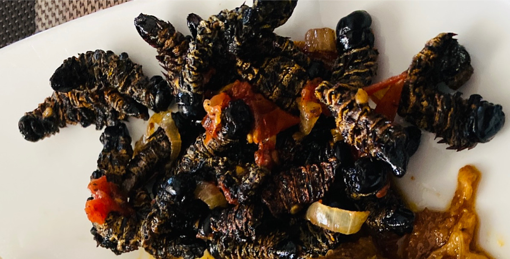

Vinkubala (Mopane Worms)

Description
Mopane Worms popularly known as vinkubala in Zambia are an incredibly important source of protein. They can be eaten as a snack or served with Nshima (pap) as relish.
Ingredients
- 1 cup of vinkubala (Mopane Worms)
1 medium sized tomato (diced)
- 1 medium sized onion (chopped)
- Salt
- 3 tablespoon cooking oil
Steps
- Wash the vinkubala twice in cold water
- Remove from cold water and soak in hot water for at least 5-7 minutes
- Add 3 tablespoons of cooking oil in a frying pan and heat it
- put the vinkubala in the pan and fry. You can add some salt
- Continue to fry until they become crunchy. This can take about 7-10 minutes depending on the heat
- Add some onion
- Continue to fry until the onions begin to brown
- Then add the tomatoes and fry until the tomatoes are cooked
- The vinkubala is now ready to serve. Enjoy!
Home